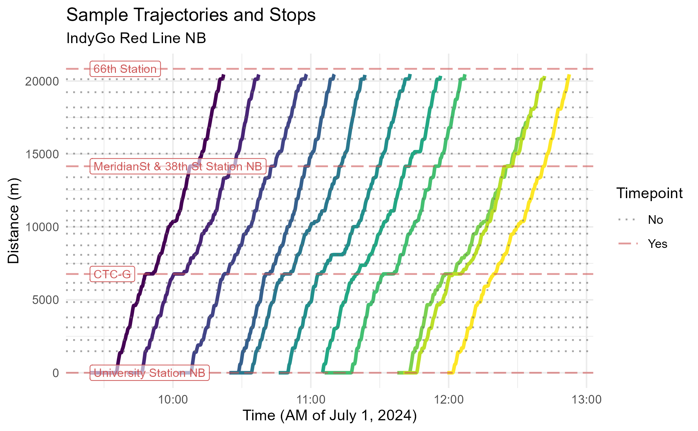
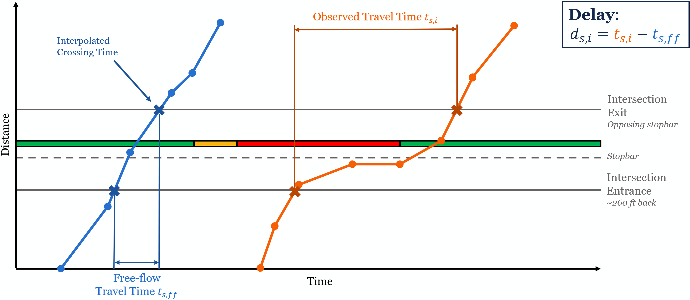
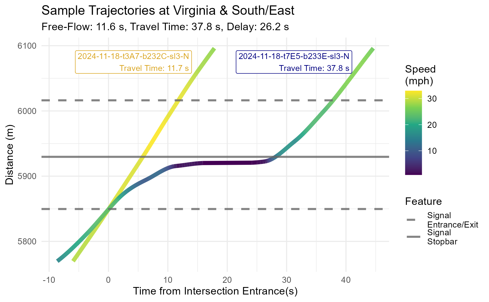
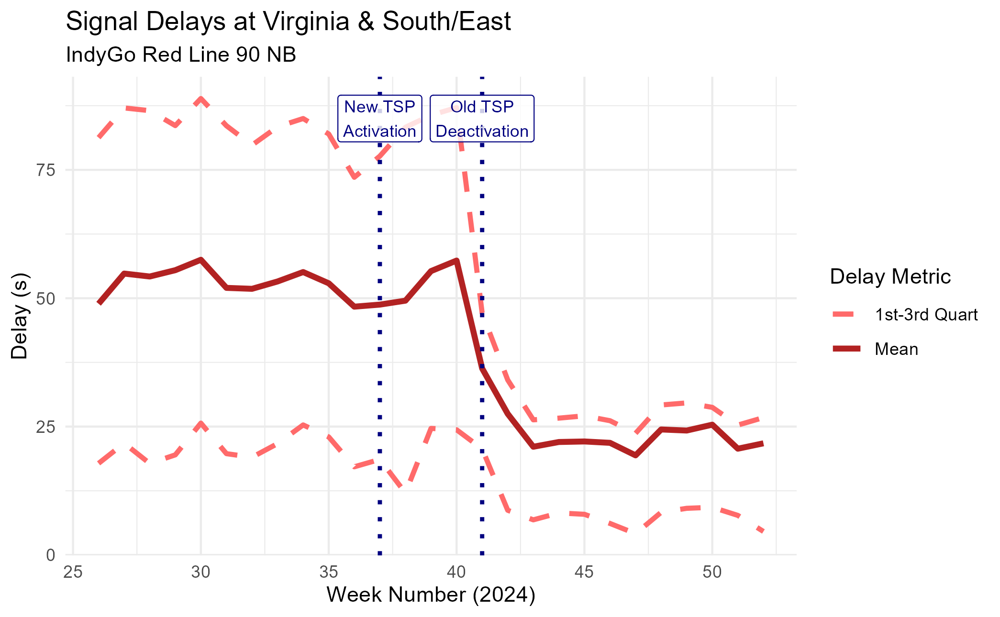
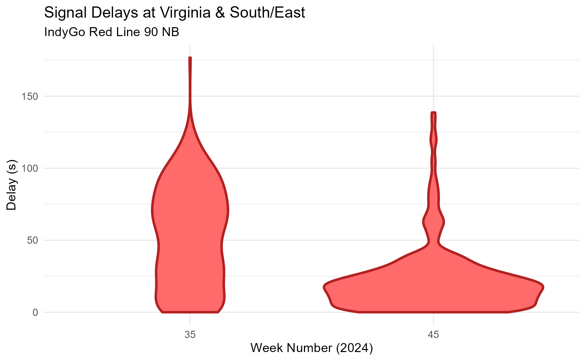

Applying Trajectories: Signal Delays in Indianapolis, Indiana
Source:vignettes/articles/eg-indygo-signals-rendered.Rmd
eg-indygo-signals-rendered.RmdIntroduction
In previous vignettes, we saw how transittraj can help
clean AVL data and fit interpolating trajectories. But how can these
curves actually be used?
This vignette will demonstrate how we’ve used
transittraj to understand delays at traffic signals along
IndyGo’s bus rapid transit routes. We’ll skip over the data cleaning
process, and instead focus on the applications of finalized
trajectories. Check out vignette("articles/input-data") to
learn more about how to get started with your own data.
Let’s load some libraries to get started:
Problem Context
IndyGo operates two BRT rotues in Indianapolis, Indiana, the Red and Purple Lines. These routes have a variety of types of bus priority infrastructure, including bus lanes and station-style stops, but the focus of this study is on the transit signal priority (TSP) system. Since its launch, the Red Line has had two generations of TSP: a traditional call-based and conditional system, launched in September 2019; and a new cloud-based and unconditional system, launched when the Purple Line opened in October 2024.
Our research goal was to use this natural experiment to understand how the TSP upgrade affected signal delays along the Red Line. For this project, we were concerned with both the central tendency and the variation of signal delays. Our study window ran from July 1, 2024 to December 31, 2024. This allowed us to capture the TSP upgrade in October 2024 with plenty of data before and after the change.
Data
Spatial Data
Spatial data typically starts as a GTFS object. If you’re unfamiliar with IndyGo’s BRT system, explore it using the interactive GTFS viewer below:
plot_interactive_gtfs(gtfs = indy_brt_gtfs,
color = "gtfs")
To find signal delays, we will need to the location of each signal’s
“entrance” and “exit”. The latitude/longitude locations of each stopbar
at each of the Red Line’s 62 signals were found using OpenStreetMaps and
satellite imagery, then projected onto the Red Line’s alignment (see
help(project_onto_route)).
head(stopbars)## routes name distance
## 1 90N Shelby & Wesley 9.759449
## 2 90N Shelby & Sumner 602.254030
## 3 90N Shelby & Troy 1410.097237
## 4 90N Shelby & Cameron 1698.392048
## 5 90N Shelby & Southern 2260.275318
## 6 90N Shelby & Raymond 3046.512562Each signal’s “entrance” was taken to be 80 meters upstream of that signal’s stopbar; the exit was at the position of the opposing direction’s stopbar. These windows were adjusted on a case-by-case basis to ensure they captured the entire acceleration and decelaration curves of the buses without capturing interference from nearby intersections, driveways, or stops. Here’s a snippet of the resulting signal locations:
head(signal_boundings)## name inout distance
## 1 Shelby & Sumner enter 522.2540
## 2 Shelby & Sumner exit 645.2048
## 3 Shelby & Troy enter 1330.0972
## 4 Shelby & Troy exit 1449.9983
## 5 Shelby & Cameron enter 1618.3920
## 6 Shelby & Cameron exit 1740.4175The final spatial layer was the position of each stop along the route
(see help(get_stop_distances)). The Red Line has 28
station-style stops in each direction. From conversations with IndyGo,
we also identified the four stops which the agency used as control
timepoints.
head(stops)## # A tibble: 6 × 6
## stop_id stop_name distance route Timepoint label_name
## <chr> <chr> <dbl> <chr> <chr> <chr>
## 1 70052 University Station NB 0 90N Yes University Station NB
## 2 70051 Troy Station NB 1478. 90N No <NA>
## 3 70049 Garfield Park Station NB 2245. 90N No <NA>
## 4 70047 Raymond Station NB 3113. 90N No <NA>
## 5 70045 Pleasant Run Station NB 3794. 90N No <NA>
## 6 70043 Fountain Square Station NB 4846. 90N No <NA>AVL Data
We accessed IndyGo’s AVL data from their Swiftly endpoint, after
which it was reformatted to meet the TIDES standards required by
transittraj. IndyGo’s buses had AVL polling frequencies
ranging from 5 to 15 seconds. With trips every 10 to 15 minutes and a
6-month study window, we started with nearly 5.2 million GPS pings and
just over 10,000 individual trips on weekdays in each direction.
After implementing the full transittraj cleaning
workflow to remove deadheads, outlying pings, insufficient trips, and
other issues, the dataset had roughly 4.1 million pings across 9,300
trips per direction. For the rest of this vignette, we’ll focus on the
northbound direction.
Processed Trajectories
After fitting interpolating trajectory curves to these cleaned and monotonic data points, we can take a look at our trajectory object:
summary(indygo_traj)## ------
## AVL Group Trajectory Object
## ------
## Number of trips: 9259
## Total distance range: 0 to 20500
## Total time range: 1719824733 to 1735707538
## ------
## Trajectory function present: TRUE
## --> Trajectory interpolation method: monoH.FC
## --> Maximum derivative: 3
## --> Fit with speeds: TRUE
## Inverse function present: TRUE
## --> Inverse function tolerance: 0.01
## ------We can also visualize a handful of these trajectories to get a feel
for the route. We’ll use transittraj’s
plot_trajectory() function:
# Set formatting parameters
plot_trips <- unclass(indygo_traj)[20:30]
traj_format <- data.frame(trip_id_performed = plot_trips,
color = viridis::viridis(n = length(plot_trips)))
feature_format <- data.frame(Timepoint = c("Yes", "No"),
color = c("indianred3", "grey40"),
linetype = c("longdash", "dotted"))
traj_plot <- plot_trajectory(
# Input trajectory data
trajectory = indygo_traj, plot_trips = plot_trips,
# Format trajectories
traj_color = traj_format, traj_legend = FALSE, traj_width = 1.2,
# Format features
feature_distances = stops, label_field = "label_name",
feature_color = feature_format, feature_type = feature_format,
feature_alpha = 0.6, feature_width = 0.6
) +
# Override default labels
labs(x = "Time (AM of July 1, 2024)",
y = "Distance (m)",
title = "Sample Trajectories and Stops",
subtitle = "IndyGo Red Line NB")
traj_plot
Methods
The primary goal of this example is calculate the delay at each signal for each trip. For traffic engineers, delay is defined as the difference between the free-flow travel time and observed travel time through an intersection.

Travel Times
We’ll start by calculating the signal travel times of each trip. To
accomplish this, we’ll use the transittraj
predict() methods. This function allows uses the
interpolating function stored inside a trajectory object to find the
times each vehicle entered and exited each signal. To accomplish this,
we’ll put our signal entrance/exit distances into predict()
using the new_distances parameter. This will tell
predict() to use the inverse trajectory function:
# Perform interpolation
crossing_times <- predict(object = indygo_traj,
new_distances = signal_boundings) %>%
rename(time_interp = interp)
# Print example
head(crossing_times)## name inout distance trip_id_performed time_interp
## 1 Shelby & Sumner enter 522.254 2024-07-01-t19-b2336-sl3-N 1719894442
## 2 Shelby & Sumner enter 522.254 2024-07-01-t1F9-b232C-sl3-N 1719824803
## 3 Shelby & Sumner enter 522.254 2024-07-01-t217-b232D-sl3-N 1719826558
## 4 Shelby & Sumner enter 522.254 2024-07-01-t268-b232B-sl3-N 1719829327
## 5 Shelby & Sumner enter 522.254 2024-07-01-t277-b232F-sl3-N 1719830102
## 6 Shelby & Sumner enter 522.254 2024-07-01-t286-b232E-sl3-N 1719831156Now we can use these “crossing times” to find the signal travel
times. We’ll begin by pivoting the table such that each row represents a
traversal of one trip through one signal, with columns
enter and exit representing the entrance/exit
times. Then, we can find the difference between these columns.
# Perform calculation
travel_times_df <- crossing_times %>%
pivot_wider(values_from = time_interp, names_from = inout,
id_cols = c(name, trip_id_performed)) %>%
mutate(travel_time = exit - enter) %>%
filter(!is.na(travel_time))
# Print example
dim(travel_times_df)## [1] 543807 5
head(travel_times_df)## # A tibble: 6 × 5
## name trip_id_performed enter exit travel_time
## <chr> <chr> <dbl> <dbl> <dbl>
## 1 Shelby & Sumner 2024-07-01-t19-b2336-sl3-N 1719894442. 1719894453. 10.3
## 2 Shelby & Sumner 2024-07-01-t1F9-b232C-sl3-N 1719824803. 1719824810. 6.78
## 3 Shelby & Sumner 2024-07-01-t217-b232D-sl3-N 1719826558. 1719826580. 22.0
## 4 Shelby & Sumner 2024-07-01-t268-b232B-sl3-N 1719829327. 1719829333. 6.22
## 5 Shelby & Sumner 2024-07-01-t277-b232F-sl3-N 1719830102. 1719830123. 20.5
## 6 Shelby & Sumner 2024-07-01-t286-b232E-sl3-N 1719831156. 1719831175. 18.9You’ll notice that we have about 540,000 individual signal traversals. That’s a bit smaller than the 576,600 we’d expect from the size of our dataset (). Not every trip will traverse the entirety of every signal; if a trip’s distance range does pass through both a signal’s entrance and exit, it’s travel time cannot be calculated.
Delay
To turn travel times into delay, we’ll need to know the free-flow travel time at each intersection. For this project, we defined “free-flow” as the 5th percentile of all travel times observed through each signal – so not the absolute fastest, but pretty close. We can find that by summarizing the travel time dataset:
# Perform calculation
signal_ff <- travel_times_df %>%
# Group by signal name
group_by(name) %>%
# For each signal, find the 5th percentile travel time
summarize(free_flow = quantile(travel_time, 0.05))
# Print example
head(signal_ff)## # A tibble: 6 × 2
## name free_flow
## <chr> <dbl>
## 1 18th & Illinois 8.93
## 2 38th & Central 5.32
## 3 38th & Park 6.77
## 4 38th & Pennsylvania 7.30
## 5 38th & Washington 5.64
## 6 Capitol & 10th 6.64Finally, to find delay, we’ll join these free-flow times back and subtract them from the total travel time:
# Perform calculation
delays_df <- travel_times_df %>%
# Join free-flow times by signal name
left_join(y = signal_ff, by = "name") %>%
# Find difference, with no negatives
mutate(delay = pmax(0, (travel_time - free_flow))) %>%
# Remove unneeded columns
select(-c(enter, exit))
# Print example
head(delays_df)## # A tibble: 6 × 5
## name trip_id_performed travel_time free_flow delay
## <chr> <chr> <dbl> <dbl> <dbl>
## 1 Shelby & Sumner 2024-07-01-t19-b2336-sl3-N 10.3 6.64 3.66
## 2 Shelby & Sumner 2024-07-01-t1F9-b232C-sl3-N 6.78 6.64 0.133
## 3 Shelby & Sumner 2024-07-01-t217-b232D-sl3-N 22.0 6.64 15.4
## 4 Shelby & Sumner 2024-07-01-t268-b232B-sl3-N 6.22 6.64 0
## 5 Shelby & Sumner 2024-07-01-t277-b232F-sl3-N 20.5 6.64 13.9
## 6 Shelby & Sumner 2024-07-01-t286-b232E-sl3-N 18.9 6.64 12.3Visualizing Delays
To understand what this actually did, let’s take a look at some specific trajectories: one trip near the free-flow at a signal, and another trip near the 75th percentile delay at a signal.
For the rest of this vignette, we’ll zoom into the signal at Virginia & South/East, just south of downtown Indianapolis. Let’s begin by getting the spatial data we need for our new plot:
# Set plotting limits
plot_signal <- "Virginia & South/East"
dist_offset <- 80 # meters
dist_step <- 0.5 # meters
# Pull desired spatial geometry
sig_stopbar <- stopbars %>% filter(name %in% plot_signal)
sig_bounding <- signal_boundings %>% filter(name %in% plot_signal)Next, we’ll want create data representing the trajectory. We’ll build
this plot manually (rather than use plot_trajectory()) to
give us finer control.
Below we first define the trips we’re looking at, then build a
sequence of distances over our intersection of interest. Then, two
predict() functions are run: the first extracts time values
from the distance sequence; the second extracts speed values from the
interpolated times (deriv = 1). After creating the latter
dataframe, we’ll center both trajectories by subtracting the time they
enter the signal.
# Set desired trips
plot_trips <- c("2024-11-18-t3A7-b232C-sl3-N",
"2024-11-18-t7E5-b233E-sl3-N")
# Set up distance sequence to interpolate for
new_distances <- seq(from = sig_bounding$distance[1] - dist_offset,
to = sig_bounding$distance[2] + dist_offset,
by = dist_step)
# Get times from distances
interp_times_df <- predict(object = indygo_traj,
trips = plot_trips,
new_distances = new_distances) %>%
rename(event_timestamp = interp)
head(interp_times_df)## distance trip_id_performed event_timestamp
## 1 5769.64 2024-11-18-t3A7-b232C-sl3-N 1731941379
## 2 5769.64 2024-11-18-t7E5-b233E-sl3-N 1731980120
## 3 5770.14 2024-11-18-t3A7-b232C-sl3-N 1731941379
## 4 5770.14 2024-11-18-t7E5-b233E-sl3-N 1731980120
## 5 5770.64 2024-11-18-t3A7-b232C-sl3-N 1731941379
## 6 5770.64 2024-11-18-t7E5-b233E-sl3-N 1731980120
# Get speeds from times
interp_speeds_df <- predict(object = indygo_traj,
trips = plot_trips,
new_times = interp_times_df,
deriv = 1) %>%
rename(speed = interp) %>%
group_by(trip_id_performed) %>%
mutate(speed = speed * 2.237,
# Center trajectories
time_enter = event_timestamp[160],
time_centered = event_timestamp - time_enter) %>%
ungroup()
head(interp_speeds_df)## # A tibble: 6 × 6
## distance trip_id_performed event_timestamp speed time_enter time_centered
## <dbl> <chr> <dbl> <dbl> <dbl> <dbl>
## 1 5770. 2024-11-18-t3A7-b232C-sl3-N 1731941379. 29.1 1731941385. -5.97
## 2 5770. 2024-11-18-t7E5-b233E-sl3-N 1731980120. 15.6 1731980129. -8.62
## 3 5770. 2024-11-18-t3A7-b232C-sl3-N 1731941379. 29.1 1731941385. -5.93
## 4 5770. 2024-11-18-t7E5-b233E-sl3-N 1731980120. 15.7 1731980129. -8.55
## 5 5771. 2024-11-18-t3A7-b232C-sl3-N 1731941379. 29.1 1731941385. -5.89
## 6 5771. 2024-11-18-t7E5-b233E-sl3-N 1731980120. 15.8 1731980129. -8.48The last data preparation we need is for some labels. Below we pull the travel time and delay information relevant to these trips, then we store it in a dataframe:
# Pull desired signal travel time data
sig_ff <- signal_ff %>% filter(name %in% plot_signal) %>% pull(free_flow)
plot_travel_times <- travel_times_df %>%
filter((name %in% plot_signal) & (trip_id_performed %in% plot_trips))
plot_delays <- delays_df %>%
filter((name %in% plot_signal) & (trip_id_performed %in% plot_trips))
# Set up labeling DF
trips_label_df <- data.frame(trip = plot_trips,
lab = paste(plot_trips, "\nTravel Time: ",
round(plot_travel_times$travel_time, 1),
" s",
sep = ""),
lab_x = c(14, 41),
lab_y = c(6075, 6075))Now we can create our plot:
# Create plot
signal_traj_plot <- ggplot(data = interp_speeds_df) +
# Add & format trajectory lines
geom_line(aes(x = time_centered, y = distance,
color = speed, group = trip_id_performed),
linewidth = 2) +
scale_color_viridis_c(name = "Speed\n(mph)") +
ggnewscale::new_scale_color() +
# Add & format labels
geom_label(data = trips_label_df,
aes(x = lab_x, y = lab_y, label = lab, color = trip),
hjust = "right", size = 3, show.legend = FALSE) +
scale_color_manual(values = c("2024-11-18-t3A7-b232C-sl3-N" = "goldenrod",
"2024-11-18-t7E5-b233E-sl3-N" = "navyblue")) +
# Add & format feature lines
geom_hline(data = sig_bounding,
aes(yintercept = distance, linetype = "Signal\nEntrance/Exit"),
linewidth = 1, alpha = 0.8, color = "grey40") +
geom_hline(data = sig_stopbar,
aes(yintercept = distance, linetype = "Signal\nStopbar"),
linewidth = 1, alpha = 0.8, color = "grey40") +
scale_linetype_manual(name = "Feature",
values = c("Signal\nEntrance/Exit" = "dashed",
"Signal\nStopbar" = "solid")) +
# Format plot
theme_minimal() +
labs(x = "Time from Intersection Entrance(s)",
y = "Distance (m)",
title = "Sample Trajectories at Virginia & South/East",
subtitle = paste("Free-Flow: ", round(sig_ff, 1), " s, Travel Time: ",
round(plot_travel_times$travel_time[2], 1), " s, Delay: ",
round(plot_delays$delay[2], 1), " s", sep = ""))
signal_traj_plot
This almost perfectly matches the theoretical diagram we presented above. The free-flow trajectory (the 5th percentile of all travel times at this signal) is a straight line traveling near the speed limit. The high-delay trajectory (the 75th percentile of all travel times at this signal) comes to a stop just ahead of the stopbar before proceeding. Between the stopped period and necessary acceleration/deceleration, this vehicle experienced roughly 26 seconds of delay.
Results
To understand how signal delay changed over time, we’ll take some week-by-week summary statistics at each signal. For this example, we’ll use the mean and inner-quartile range:
delay_by_week <- delays_df %>%
# Extract date & week number from trip ID
mutate(service_date = as.Date(substr(trip_id_performed,
start = 1, stop = 10)),
week_num = as.numeric(strftime(service_date, format = "%U"))) %>%
# Group by signal & week
group_by(name, week_num) %>%
# Calculate summary statistics
summarize(delay_mean = mean(delay),
delay_25th = quantile(delay, 0.25),
delay_75th = quantile(delay, 0.75),
.groups = "keep")
# Print example
head(delay_by_week)## # A tibble: 6 × 5
## # Groups: name, week_num [6]
## name week_num delay_mean delay_25th delay_75th
## <chr> <dbl> <dbl> <dbl> <dbl>
## 1 18th & Illinois 26 18.7 1.66 31.8
## 2 18th & Illinois 27 18.6 2.11 29.6
## 3 18th & Illinois 28 18.2 1.52 30.0
## 4 18th & Illinois 29 18.6 2.08 32.1
## 5 18th & Illinois 30 18.2 1.85 31.1
## 6 18th & Illinois 31 16.8 1.25 29.7Let’s visualize how delays have changed over time. Below we plot the mean and inner-quartile range of signal delay at Virginia & South/East:
# Filter to desired delay data
plot_df <- delay_by_week %>%
filter(name %in% plot_signal)
# Set up known TSP changes
tsp_df <- data.frame(week_num = c(37, 41),
label_y = c(85, 85),
lab = c("New TSP\nActivation",
"Old TSP\nDeactivation"))
# Plot
delay_plot <- ggplot(data = plot_df) +
# Add mean, 25th, and 75th lines
geom_line(aes(x = week_num, y = delay_mean,
linetype = "Mean", color = "Mean"),
linewidth = 1.4, alpha = 1) +
geom_line(aes(x = week_num, y = delay_25th,
linetype = "1st-3rd Quart", color = "1st-3rd Quart"),
linewidth = 1.2, alpha = 1) +
geom_line(aes(x = week_num, y = delay_75th,
linetype = "1st-3rd Quart", color = "1st-3rd Quart"),
linewidth = 1.2, alpha = 1) +
# Add vertical lines & labels for TSP changes
geom_vline(data = tsp_df,
aes(xintercept = week_num),
color = "navy", linetype = "dotted", linewidth = 1) +
geom_label(data = tsp_df,
aes(x = week_num, y = label_y, label = lab),
color = "navy", alpha = 0.8, size = 3) +
# Formatting
scale_linetype_manual(name = "Delay Metric",
values = c("Mean" = "solid",
"1st-3rd Quart" = "dashed")) +
scale_color_manual(name = "Delay Metric",
values = c("Mean" = "firebrick",
"1st-3rd Quart" = "indianred1")) +
theme_minimal() +
labs(title = "Signal Delays at Virginia & South/East",
subtitle = "IndyGo Red Line 90 NB",
x = "Week Number (2024)",
y = "Delay (s)")
delay_plot
We can see a pretty cool trend: as the signal transitioned into the new TSP system, the average signal delay fell dramatically. The 75th percentile – representing a “slow” trip – saw an even larger improvement.
To better visualize how the distribution of signal delays changed, we’ll go back to our point observations (not grouped by week) and make violin plots for two representative weeks: week 35, with the old system, and week 45, with the new system.
# Filter to desired delay data
plot_weeks <- c("35", "45")
violin_df <- delays_df %>%
filter(name %in% plot_signal) %>%
mutate(service_date = as.Date(substr(trip_id_performed,
start = 1, stop = 10)),
week_num = strftime(service_date, format = "%U")) %>%
filter(week_num %in% plot_weeks)
# Plot
delay_violins <- ggplot(data = violin_df) +
# Create violines
geom_violin(aes(x = week_num, y = delay, group = week_num),
color = "firebrick", fill = "indianred1",
linewidth = 1) +
# Formatting
theme_minimal() +
labs(title = "Signal Delays at Virginia & South/East",
subtitle = "IndyGo Red Line 90 NB",
x = "Week Number (2024)",
y = "Delay (s)")
delay_violins
We see a similar trend. The violin plot is much shorter and wider at week 45 than it is at week 35, suggesting that signal delays get much shorter and much more consistent.
Conclusion
In this vignette, we demonstrated how cleaned AVL data and a
processed trajectory can be used to answer questions relevant to
real-world planning studies. We used spatial data and
transittraj’s predict() method to find signal
travel times and delays, then used these same tools to visualize the
effect of bus priority treatments. To learn more about how to use
transittraj to do this with your own data, check out
vignettes("input-data").